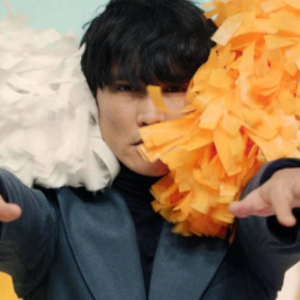
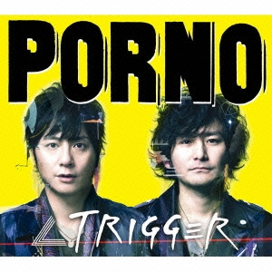
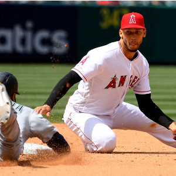
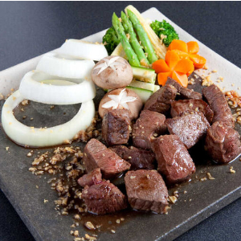
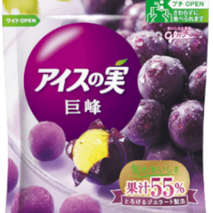

インデックス
- インデックス
- 目次ですぅ
- 好きなもの
- 好きなものですぅ
- 嫌いなもの
- 嫌いですぅ
- プロフィールテーブル
- プロフィールですぅ
- マインドマップ
- 見る価値ないですぅ
- CTF
- CTFの紹介をしてます
好きなもの
好きなアーティスト
|  |  | |
| サカナクション | ポルノグラフィティ | あいみょん |
|---|
好きなスポーツ
|  | ||
| サッカー | バスケ | 野球 |
|---|
好きな食べ物
|  |  | |
| チョコ | ステーキ | アイスの実 |
|---|
嫌いなもの
- しいたけ
- かんだ時の汁が最悪
- 超高音
- 耳にくる
- カメムシ
- パクチーのにおいがする
プロフィールテーブル
| 柏木隆賢 | |
| 90556 | |
| IT-11B-175 | |
| No.09 | |
| 誕生日 | 1998年6月3日 |
|---|---|
| 特技 | 忘れ物 |
| 趣味 | ネットサーフィン |
| 好きな食べもの | アイスの実 |
| 好きなアーティスト | サカナクション |
| 思い通りのサイトを作れるようになりたい | |
マインドマップ
-
守山区
-
古墳
- 墓
- 歴史
-
ゆとりーとライン
- ナゴヤドーム
- 龍泉寺の湯
- 専用レーン
-
古墳
-
サカナクション
-
新宝島
- ニコニコ
-
音楽
- 通学
-
バンド
- 演奏
- 複数人
-
新宝島
-
ケチ
-
名古屋
- めんどくさい
- 都市
-
A型
- めんどくさい
-
名古屋
-
スポーツ観戦
-
バスケ
- レブロン
- 5人
-
サッカー
- メッシ
- 11人
-
野球
- トラウト
- ９人
-
バスケ
-
肩こり
-
姿勢が悪い
- 見栄えが悪い
- いいことなし
-
炎症
- 痛い
- つらい
-
姿勢が悪い
-
忘れ物が多い
-
スマートフォン
- 大切
-
問題集
- 机の中
- 基本情報
- LANケーブル
-
スマートフォン
CTF
CTF(Capture The Flag)とは
コンピュータセキュリティ技術の競技である。CTFは通常、参加者に対しコンピュータを守る経験に加え
現実の世界で発見されたサイバー攻撃への対処を学ぶ教育手法として企画されている。
コンピューターセキュリティーに関する攻撃・防御の両方の立場から
暗号、ネットワーク技術、プログラミングなど、さまざまな問題を解くことで技量や知識を競う。
問題の分類(一部)
答えの形式は[FLAG_?????]
-
- WEB
- WEB技術に関する問題
- 例題：難易度☆
- このページのどこかに答えが隠されているよ。ただしそれは普通に見ても見つからない位置にあるよ！
Control + Shift + IキーまたはF12キーを押すと・・・？ -
- Crypt
- 暗号技術に関連する問題
- 例題：難易度☆☆
- CIXD_PRDLFKB! ＜ーこれは暗号化された答えだよ。復号して正しい値を導き出そう！
シーザー？カエサル？そいつらがヒントらしい・・・ -
- Forensics
- 電子情報の分析および技術的手法に関する問題
- 例題：難易度☆☆☆
- 上の写真に写っている川の名前が答えだよ。FLAG_川の名前(ローマ字大文字)
画像データってのは位置情報を持っているものがあるらしい・・・